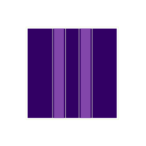

Fast Image Stitching
Image stitching of overlapping digital images is known to be used to create panoramic images in smart phones.
In this industrial project an image stitching algorithm for gray value image series of a video has been developed in collaboration with a customer. The motion of the video camera can be measured from the stitched image series with an accuracy of a few micrometers.
The algorithm especially features limited translation ranges between subsequent images. This makes the image stitching process fast and robust even at significant variations of image contrast.